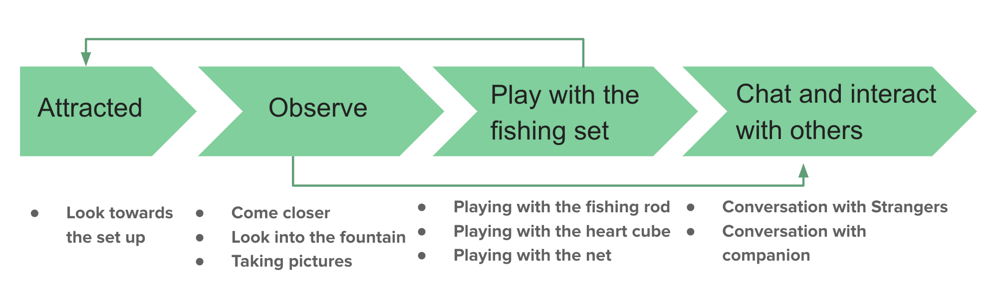
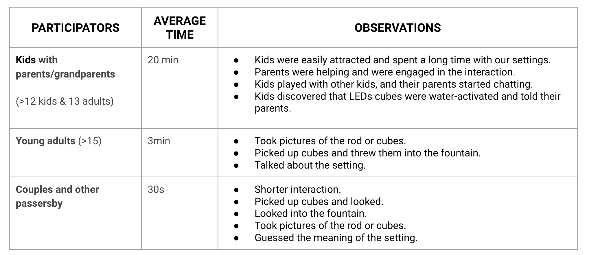
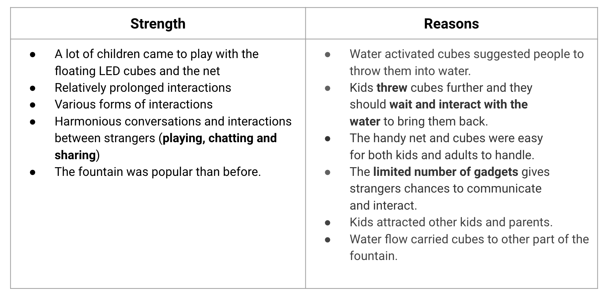
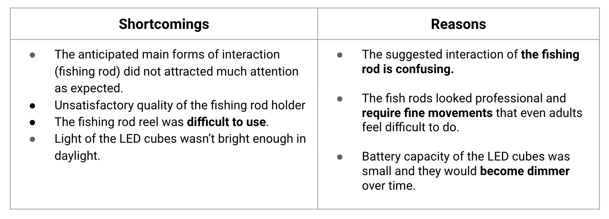
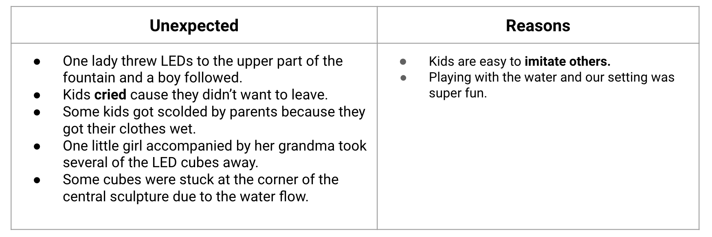

Instruction Sets for Strangers ——— Final On-site Prototype
WEEK 3 - SUN, SEPT 15TH, 2019Background
As a miniature of New York itself, Bryant Park welcomes people from all different age groups, cultures and backgrounds. The fountain of Bryant Park is on the central axis with a large flow of passersby. However, few interactions happen around the beautiful fountain.

Concept
We planned to set up a set of fishing equipment right next to the fountain, hoping to create contrast to reignite people’s curiosity for daily environment and attract them to interact with the fountain in Bryant Park.
Meanings of the interaction
Fishing is an activity with hope, mystery and encouragement. That's why we have the metaphor of fishing---"fishing for compliment". Fountain is also a place where people throw coins for hope and wishing well. We tried to combine the activity in this place and convey the meaning of hope behind it, bringing PLAYFUL,WARM, INSPIRING experience to strangers.
Steps of Intented interaction
Final Prototype
- Fishing Rod with a LED ball (Water activated )
- Heart shape LED cubes (Water activated )
- Fishing net
On-site Setting
- Location: Bryant Park- Josephine Shaw Lowell Memorial Fountain
- Weather: Cloudy
- Date: 09/15/2019- Saturday
- Time: 5:10pm-7:30pm
- Groups of Passersby: Kids with their parents/grandparents; Tourists; Couples; Family andFriends
Observations
Reviews
  Future Iteration
- Focus on the interaction with water
- Cover a larger area of the fountain with more floating cubes and with the help on the water flow
- Cutting out the superfluous and complicated tools(Fishing rod)
- Simpler triggers of interactions(bigger and bright-color floating cubes)
- More obvious feedbacks for interactions to engage different groups of people